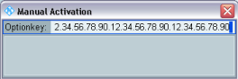

The "License Keys" section provides the following softkeys.
Use this softkey to apply an activation key by manually typing in the activation key code.
A dialog box is opened for this purpose. The separating dots are entered automatically.

Use this softkey to apply a deactivation key by manually typing in the deactivation key code.
A dialog box is opened. Enter the deactivation key code and save the response key to a file.
You can save the response key from the dialog box, or alternatively later on, see "Save Response Key to File".
Save the response key to a USB memory stick or to the CMW user data directory on the system drive, folder ResponseKeys (for example D:\Rohde-Schwarz\CMW\Data\ResponseKeys).
The key confirms that you have deactivated the license. The online tool R&S License Manager requests the key when moving a portable license.
Use this softkey to apply an activation or deactivation key via a registered license file instead of typing in the key code manually.
You can open registered license files from a USB memory stick or from the CMW user data directory on the system drive (for example D:\Rohde-Schwarz\CMW\Data).
Press the softkey to open a dialog box, navigate to the file location and select one of the listed keys. Press "Apply" or "OK" to install the key. "OK" closes the dialog box, while "Apply" keeps it open, so that you can install additional licenses.
Restarts the CMW software. Perform this action after you have applied license keys.
This softkey is available in subsection "Portable License Keys" only.
First select a portable license in the list, then press the softkey to save the license to a file. You can save it to a USB memory stick or to the CMW user data directory on the system drive, folder ExportedLicenseKeys (for example D:\Rohde-Schwarz\CMW\Data\ExportedLicenseKeys).
The online tool R&S License Manager requests the license file to identify a portable license to be moved.
This softkey is available in subsection "Deactivation Keys" only.
First select a deactivation key in the list, then press the softkey to save the response key for this deactivation key.
Usually, the response key is saved at the end of the deactivation procedure. This softkey allows you to save it later on.